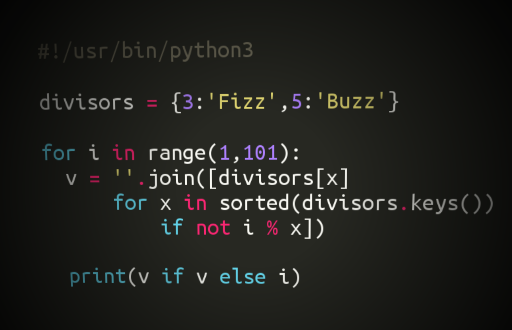
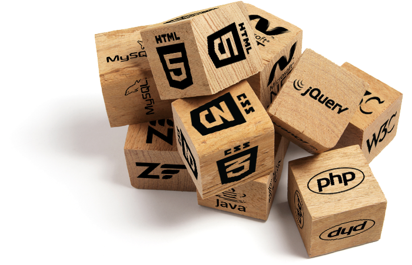

Dev Blog

About Me
Hey there! My name is Felix Su. I am a 2nd year intended Computer Science major at the University of California at Berkeley.
I started coding during my senior year in high school and haven't looked back since. Over the past two years I've developed a wider knowledge of different languages and data structures and am currently working to become a better full stack developer. I soon hope to be completely comfortable with the many ways to manage front and back end development.
If I'm not coding you can probably find me on the basketball court or going out to the tennis court for a set or two. I've been honing my basketball skills as much as possible this summer by heading out to the blacktop for 2-3 hours everyday. I've found that playing pick up games and shooting around with strangers is a great way to make friends. As one of my more casual hobbies I also record songs for my Soundcloud using Garageband.
I'm currently a Software Engineer at a start up in San Francisco called Beeyond Inc.
Bootstrap or No?
Here's my two cents on the debate about whether or not to use CSS styling templates. The only reason I wouldn't use an existing template, like Bootstrap, would be because I want to create a completely unique design. Otherwise, what's the point? I think of CSS modules as a bunch of building blocks. If you wanted to build a house would you mold the blocks from scratch? Probably not. If you get to the point where a unique block is needed, just design that one block and add it to the pile. That's exactly how CSS works. Most styling templates are built on great grid structures, allowing your divs to be nicely aligned. This is what makes most sites look so clean. Building up from at least that much is a great platform to start with. Then override classes that you don't like to create your unique look.
For those who still aren't convinced, think about it this way. If you were building an application, would you avoid using open source plugins as much as you avoid using styling templates? How would you obfuscate and minify your files, ensure platform continuity, optimize your code for all browsers, unit test, or do e2e testing? Writing all that code yourself is simply a waste of time. Also, it's almost impossible to update and debug all of it as quickly as the other open source options.
Yes, CSS styling is significantly lower level than all of those plugins I mentioned, but it follows the same principle. Unless you have an excess of time and money, or in need of a completely unique style, there's no need to reinvent the wheel.
So You Want to be a Developer
After a year of attending UC Berkeley and hanging out in the Bay Area, I discovered myself smack dab in the middle of a place where everyone wanted a piece of the tech industry. Design, code, and engineering were not well documented in high school classes, but now that there were thousands more unique people with interesting sets of skills, these industries suddenly gained popularity. But with interest comes a bunch of questions. How hard is it? Do I need any previous knowledge? How do I know if I'm really suited for coding?
If you’re one of these people, I have two tips. The first is to change the way you think. Code is interpreted by computers, not humans. This means you lose a lot of the flexibility and sophistication that comes with human intuition. So most things have to be broken down and built back up again. I came across a great example of this concept when I had just started coding and was practicing for a UPenn competition in high school. The prompt was to write a function that could compute exponents using only addition. Even after gaining more experience, I still think this is a great problem to gauge how ready someone is to start learning code. Although beginners probably know nothing about loops or functions, focusing on the concept is what's important. If you think about it, an exponent is just repeated multiplication, and multiplication is just repeated addition. If you’re computing a^b, repeat a+a, a-1 times to get a*a, then repeat that entire thing b-1 times and BAM problem solved. This is what I like to call modular thinking. Which leads us to my next tip.
It’s essential to understand that code is like an assembly line. Good developers compartmentalize their code into functions that can be reused. This is similar to how individual pieces of a product are developed and then churned rapidly into an assembly line. Regardless of what kind of language you’re dealing with, this modularity is one thing that almost all languages have in common. This makes large projects and open source code possible. A set of rules and a collection of unique blocks of code allow developers to build on what others have made before them. This foundation is the secret to the rapid acceleration of the tech age.
Although to some degree, I believe everyone should dip their toes into the waters of coding, I have to say that it is not for everyone. Just how some people are great at learning a new language, only some people will have either a natural talent for coding or a unique passion for it. Without either of those traits, it will be hard to find coding particularly useful. There are tons of languages with unique styles and just learning how to read and write them isn’t enough. It’s important to know how and why code works the way that it does. I think this is a good way to decide whether or not software engineering will be worthwhile for you. If you’re at work and your engineering friend walks over to your desk to take a break and says “man, I’m stuck on this problem, I need a breather”, you should be confident enough to say, “let me take a look at it, maybe I can help”. You don't have to work your ass off and try to be the best developer in the world, but if you can get to a point where you can offer a fresh mind and unique insight, then stop reading this and start coding.
Upcoming Post Notes
Best Practices for building Websites
Protractor E2E testing
Documentation Sucks
Webstorm sometimes will not recognize protractor method, that’s okay
set timeout to larger number (this.timeout(50000)), because default is too short for most in depth apps
Browser.wait()
Error: browser.wait(element(by.id('some-element')).isPresent);
TypeError: Cannot call method 'count' of undefined
Solution: In 0.24.0 and above, the isPresent method makes use of the “this” keyword instead of closure to refer to the element object, meaning that is has to be run in the context of the element. So now, use this pattern instead:browser.wait(function(){return element(by.id('some-element')).isPresent();});
browser.wait (must set “optional” timeout number or else it times out too quickly)
FUll:
browser.wait(function(){
return element(by.id('some-element')).isPresent();
});
https://github.com/angular/protractor/issues/2098
Check above for “getCurrentUrl”
Javascript For Loop Closures
My Solution:
element.all(by.id('td-card')).then(function(list) {
var i = 0;
list.forEach(function(elem) {
elem.getCssValue('z-index').then(function (value){
expect(value).to.equal(Integer.toString(list.length - i));
i++;
});
});
//for(var i = 0; i < list.length; i++) {
// list[i].getCssValue('z-index').then(function (value){
// console.log(list[i], ":", value);
// //expect(value).to.equal(list.length - i);
// });
//}
});
Help: http://stackoverflow.com/questions/750486/javascript-closure-inside-loops-simple-practical-example
Javascript Closures
Javascript Book Page 65-66
Items with the same z-index
Debugging
Injection Error
Error: injection make sure… is not misspelled...
order of injection must correspond with the order of use in service or factory function
EventsCtrl.$inject = ["EventsModel", "eventDetails", "$stateParams”];
function EventsCtrl(EventsModel, eventDetails, $stateParams){
Factory to Controller Promise (AngularFire)
Error: undefined result from factory
Factory contains promise, controller called .then() on function to apply the result to the scope. Maintains asynchrony and chronological rendering of actions.
Factory:
function getEventInfo() {
if ($stateParams.id) {
var currentEventId = $stateParams.id;
var eventRef = FirebaseRoot.child("events").child(currentEventId);
var dateObj = $firebaseObject(eventRef.child("date"));
return dateObj.$loaded().then(function(dateObj) {
return dateObj.$value;
});
}
}
Controller:
EventsModel.getEventInfo()
.then(function(dateObjVal){
vm.formattedEvent = formattedDate.formatDate(new Date(dateObjVal));
});
Interesting Logic Riddles
Cup half full
Lighter tennis ball
Three lightbulbs
Three pirates
11 13 15 hourglass
Bellhop Clerk 29 dollars
100 prisoners
1000 blue 1000 brown 1 green eyes
Other Info
FAQ: What stack are you using?
Vocab: Stack Top-Level Server-Side Client-Side Deprecated
Essential Languages and Tools:
Node.Js and MongoDB
HTML, CSS, JavaScript. jQuery (Extra)
PHP/Apache
Swift/Xcode
Java/Python
AngularJS/Firebase/Ionic
JSON/Markdown
Tutorials: LinkedLists Explain why this is useful and combining lists has constant runtime Look at Hw8 Catenable Queue. Every Node has a parent and child node, so only a pointer is needed to combine or locate new nodes.
Trees
Important Concepts: Abstraction
RunTime/Efficiency
Terms: Object Oriented Programming
Data Structures
Asynchronous Coding
CS Interview Questions
Comparator vs. Comparable Exception throw vs. throws Java final, finally, finalize Tree propagation Runtimes Sorting Define the digitProduct to be the product of all of an integer’s digits (i.e. 875’s digitProduct is 8*7*5 = 280). Given an array of N integers (general, not java) determine if any pair has the same digitProduct in θ(NlogN) time and θ(1) space in the worst case. Ans: Replace all numbers with its digit product θ(N) and then Merge sort the list θ(1) and then determine if any adjacent digitProducts are the same. Use same array θ(1) space
What do VC’s Look For
Entrepreneurs Roundtable Accelerator
Katya Constantine: DigishopGirl Sumeet Shah: Brand Foundry Basics Customer acquisition funnel Awareness Content / PR Contests Consideration Email / Paid Speech Conversion Service Loyalty First thousand users (Free) First User Social Media First Hundred Users (Too much Money ($100 / user)- not scalable) Paid Search Social Ads First thousand users Need I.TV Model Best way to see how efficient you are and how to get people excited about the service Traction Find right retail and marketing space Search for investors and evangelists Growth Marketing WOM to social media to SEO to paid search to etc. Viralness of product portfolio Stickiness Strong differentiators Creativeness and good relationships with team First 100,000 users Long tail keyword targeting (getting users cheaply) What may have worked early on may not work forever Experimenting at all stages will keep a business on its toes Showcasing Results Set up Google Analytics Channels and Metrics Set up convergence look up convergence Examine data every day to adjust strategy Data visualization Looker / Optimizing (A/B testing of pages) When you first start out focus on what’s free, not what Expand to multiple search engines and distribution sources once you’ve hit success in the larger spaces in order to expand the model
Bidding bid within your range Tighten up model to maximize efficiency If consumers are worth $20 Increase stickiness to maximize conversion per click Take a look at competitors to start Research consumers on social media to find new consumers Mobile customer acquisition on Facebook data driven platform success stems from ability to read data an adapt from it Cheapest channel to reach customers Mailchimp Don’t jump start too quick by buying huge customer lists. Build slowly and steadily Could be like perfume that gets hot to early and then gets pushed to the back of the store